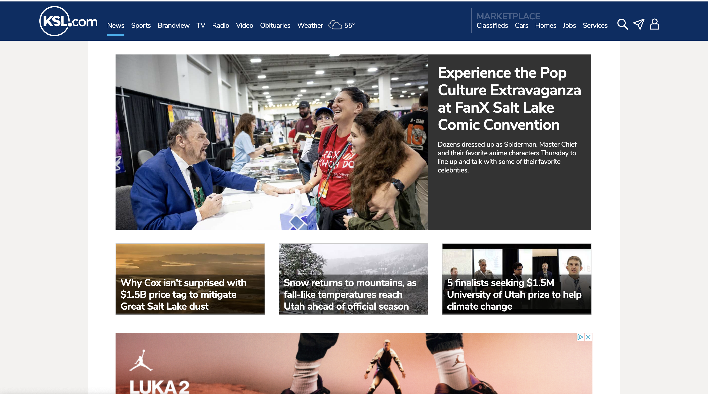

White Space and Clean Design
Chruch of Jesus Christ

The Church of Jesus Christ website is a great one. The homepage has a lot of white space giving Christ the centeral point in the website. the design of the website is also very clean allowing you to access what you are looking for easily.
Visual Hierarchy
KSL
The KSL website has good visual hieratchy. At the top of the page you can see the most prevalent news story, and decending from that are other news stories that might peak ones interest.
Rule of Thirds
Vans
The home page to the Vans website is beautifuly made. It has a wonderful representaion of the rule of thirds. it demonstrates this with the three distinct columns, and the photos themselfs also demostrate the rule of thirds with photography.